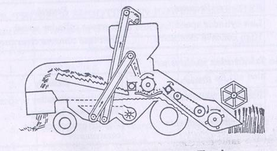

AENG 252 :: Lecture 01 :: THRESHING –THRESHERS FOR DIFFERENT CROPS, PARTS, TERMINOLOGY, CARE AND MAINTENANCE

Post harvest Technology:
Post harvest processing technology or Post harvest technology of agricultural products refers to the processes and treatments carried out on agricultural products after it is harvested. It starts from the selection of proper harvest and ends with marketing. The following operations such as threshing, drying, storage, parboiling, milling, sorting, grading, oil extraction, juice extraction, ginning, cold storage, packing, transport, marketing etc., included under this term. The purpose of post harvest processing is to maintain or enhance quality of the products and make it marketable.
It is an inter-discipline “science and technique” applied to agricultural produce after harvest for its production, conservation, processing, packaging, distribution, marketing, and utilization to meet the food and nutritional requirement of the people in relation to their needs. It has the capability to meet food requirement of growing population by eliminating avoidable losses, making more nutritive food items from low grade raw commodity by proper processing and fortification, converting low grade food and organic waste into nutritive cattle feed. It has potential to create rural agro industries.
Threshing
- Process of detaching grains from ear heads or from the plants
- Threshing can be achieved by three methods namely rubbing, impact and stripping
- Threshing loosens the grains and separates from the stalk
Principle
- Bases on the principle that when
- Impact is given on crops, the grains are separated
- The crop mass passes thru a gap between drum and concave, wearing or rubbing action takes place-separates grain from panicle
- Rupture of the bond between grains and ears is due to
- Impact of beaters or spikes over grains
- Wearing or rubbing action
- Strength of the bond between grain and panicles depends upon
- Type of crop
- Variety of crop
- Moisture content of grain
- Ripening phase of grain
Efficiency and quality of threshing depends upon
- Drum speed
- No. of beaters
- Gap between drum and concave
- Quality & condition of plant mass fed to thresher
- Direction of feeding
- Rate of feeding
Methods
- Based on power
- Manual – capacity varies from 30 to 50 kg/h
- Power - capacity varies from 300 to 50 0kg/h
- Based on type of feeding
- Throw-in
- Entire crop is thrown into the cylinder
- Major portion is threshed by initial impact or spikes of the cylinder
- Hold-on
- Holds the panicle end against the wire loop of the rotation
Based on flow of material
- Through flow
- Threshed straw and separated grain flow in a direction perpendicular to the axis of the threshing cylinder
- Axial flow
- Threshed straw and separated grain flow in a direction parallel to the axis of the threshing cylinder
Components of thresher
- Concave
- Threshing cylinder
- Cleaning unit
Concave
Concave shaped metal grating, partly surrounding the cylinder against which the cylinder rubs the grain from the plant or ear heads & thru which the grains fall on the sieve
Threshing cylinder
- Most important component of thresher
- Balanced rotating assembly comprising rasp beater bar or spikes on its periphery and their support for threshing the crop
- Types
- Peg tooth
- Wire loop
- Rasp bar
- Angle bar
- Hammer mill
Types of threshing cylinder
Peg tooth
- The teeth on the concave & cylinder are so arranged that the cylinder teeth pass midway between the staggered teeth on the concave
- The clearance between the cylinder & the concave is adjusted according to the requirement
- As the stalks pass thru the clearance space, the grains get separated from the head due to impact action between the teeth
Wire loop
- Cylinder is studded with number of wire loops through out its outer periphery
- Mostly used on paddy thresher
Angle bar
- Cylinder is equipped with angle iron bars, helically fitted on the cylinder
- The bars have rubber pads on their faces
- The clearance between cylinder and concave unit at the entrance is from 13 mm to 19 mm and reduces to 6 to 9 mm only
Hammer mill type
- Beaters are in the shape of hammer mill
- Beaters are attached with the beater arm at the tip
- Beater arms are rigidly fixed to a hub which is mounted on main shaft
Rasp bar cylinder
- Cylinder has corrugated bars round it
- Threshing is accomplished between corrugated cylinder bars and stationary bars of the concave portion
- Rotating cylinder takes the grains out from the head as it is drawn over the bars on the concave unit
- Usually 6 to 8 bars are spirally fixed on the cylinder
Cleaning unit
- Function is to separate & clean the threshed grain
- Mainly consists of two or more oscillating sieves, a fan and air sucking duct known as aspirator
- Usually two ducts viz. primary and secondary duct
- Function of primary duct is to remove major portion of straw, dust and other foreign matter
- Secondary duct is used for final cleaning of the grain
Thresher with aspirator
Threshing efficiency
- The threshed grain received from all outlets with respect to total grain input expressed as percentage by mass
- Efficiency = 100- % of unthreshed grain
- Factors affecting threshing efficiency
- Peripheral speed of the cylinder
- Cylinder concave clearance
- Type of crop
- Moisture content of crop
- Feed rate
Cleaning efficiency
Efficiency = M/F X 100
- M – Quantity of clean grain obtained from the sample taken at main grain outlet
- F – Total quantity of sample taken at main grain outlet
Combine –Harvester-Thresher
- Machine designed for harvesting, threshing, separating, cleaning and collecting grains while moving through the standing crop
- Main functions are
- Cutting the standing crops
- Feeding the crop to threshing unit
- Threshing the crops
- Cleaning the grains from straw
- Collecting the grains in a container

Combine-Harvester-Thresher
| Download this lecture as PDF here |